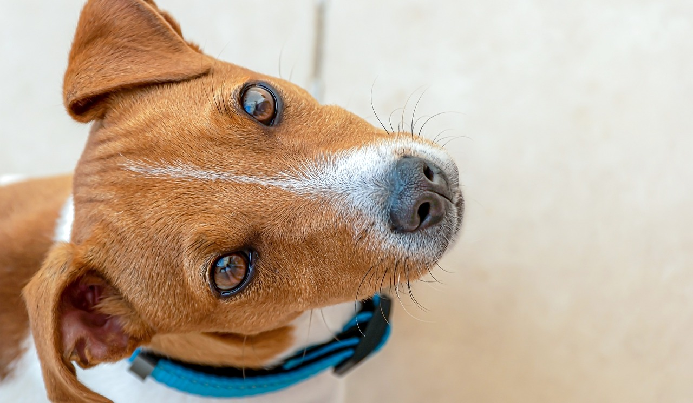

REAL TERRIER
Щенки породы Джек Рассел Терьер
REAL TERRIER
Щенки породы Джек Рассел Терьер
Обо мне
Меня зовут Ольга и уже 14 лет я занимаюсь разведением собак породы джек рассел терьер с устойчивой психикой, которые соответствуют всем стандартам породы. Джек Рассел Терьер – чудная порода мини-собак, которая сочетает в себе массу положительных качеств: жизнерадостность, преданность, игривость и охотничьи инстинкты. У меня вы получите консультационную поддержку, а так же рекомендации по дрессировке, вакцинациии и кормлению. Отвечу на все вопросы по содержанию джек рассела. Вы можете приехать в гости, посмотреть на щенков и купить понравившегося питомца. Немного сложнее тем, кто живет дальше. Но я верю в то, что собаку выбирают в том числе и сердцем. Так что , если вы заприметили на фотографиях мордашку, которая вам понравилась – пусть расстояние не сдерживает вас.
Преимущества питомника Real Terrier
Мы являемся членом международной кинологической федерации FCI.
Занимаемся выставочной карьерой и разведением породы с 2009 года
Всегда поддерживаем отношения с владельцами наших щенков
Наши питомцы-чемпионы многих стран
Факты о породе Джек рассел терьер
Джек рассел терьер – английская порода собак, которая пользуется огромной популярностью во всем мире. Джек рассел терьер очень дружелюбный пес, при этом энергичный, неунывающий и забавный, что делает его прекрасным компаньоном и любимцем детей.
Характер: Упрямый, смышленый, энергичный, бесстрашный, спортивный
Продолжительность жизни: 13-16 лет
Масса: 6-8 кг(взрослые)
Рост: 25 – 38 см (в холке)
Как приобрести Джек Рассел Терьера
Выбираете питомца на нашем сайте либо при личном визите
После выбора договариваемся о встрече для знакомства
Далее оформляем документы продажи
Затем ваш друг переезжает в новый дом
Сколько нужно гулять с Джек рассел терьером?
Не следует смешивать прогулки с выгуливанием. Взрослую собаку достаточно выгуливать три раза в сутки: утром, в обед и вечером (перед сном), каждый раз минут по 10—15. Прогулки же в общей сложности должны составлять 1,5—2 часа в сутки и уж никак не меньше одного часа. Это минимум того времени, которое собака должна находиться на воздухе, двигаться, резвиться.
Как забронировать щенка?
Бронирование щенков мы открываем в возрасте 1,5 месяца, когда уже видно особенности и характер каждого щенка. После ознакомления с договором бронирования и договором купли-продажи, вносится задаток в размере 10% стоимости щенка. Таким образом забронированный щенок снимается с продажи и никому больше не предлагается. Забрать щенка домой можно в возрасте от 2,5 месяцев.
Можно ли содержать Джек рассела в квартире?
Джек-рассел терьер хорош тем, что его можно содержать как в загородном доме, так и в квартире. В квартире должно быть достаточно места для выплеска энергии. Джек рассел требует много умственной и физической стимуляции каждый день.
Какой характер у Джек рассел терьера?
Джек-рассел-терьер — веселая энергичная собака с большой потребностью служить людям. Она лучше всего чувствует себя в компании человека, выполняя поставленную задачу. Рытье для джек-рассел-терьера в порядке вещей, особенно если он решил, что его задача — избавить ваш двор от грызунов! Способность охотиться привита этим собакам в результате селекции и является их естественным состоянием. Охотничий инстинкт в сочетании с высоким уровнем энергии делают дрессировку обязательной для этой породы. Состязаться с джеком-расселом в упрямстве — пустое дело, он всегда выйдет победителем. При правильном воспитании — это прекрасная собака-компаньон и любимец детей.
Кого лучше брать мальчика или девочку джек-рассел-терьер?
Нет никаких рекомендаций, кто лучше - мальчик или девочка, только ваши личные предпочтения. В отличие от собак крупных пород, у Джеков нет особой разницы между представителями разных полов.
Сколько раз в день кормить джек рассел терьера?
Взрослую собаку кормят 2 раза в день – утром и вечером, желательно после прогулки. Размер порции рассчитывается индивидуально в зависимости от активности и веса животного
Как часто надо купать джек рассел терьера?
Джек-рассел терьера не нужно купать часто, так как структура его шерсти отталкивает грязь. Достаточно после прогулки вытереть лапы и места загрязнения специальными очищающими салфетками или влажным полотенцем. Во время купания следите, чтобы вода не попала в уши, купать собак можно раз в месяц.
Кому подходит джек-рассел-терьер?
Прежде всего, порода подходит активным людям, обожающим занятия спортом на свежем воздухе и долгие пешие прогулки. Комфортно будет такой собаке и в семье с шумными подвижными детьми. И, разумеется, если вы любитель охоты, джек-рассел-терьер станет для вас прекрасным выбором.